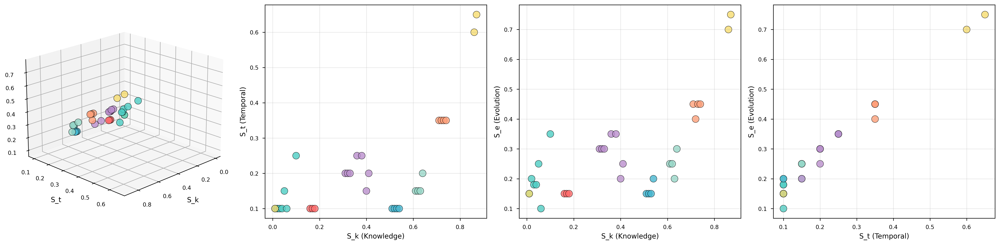
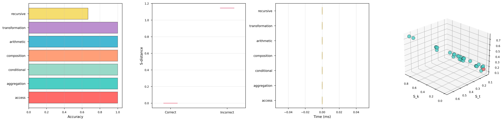
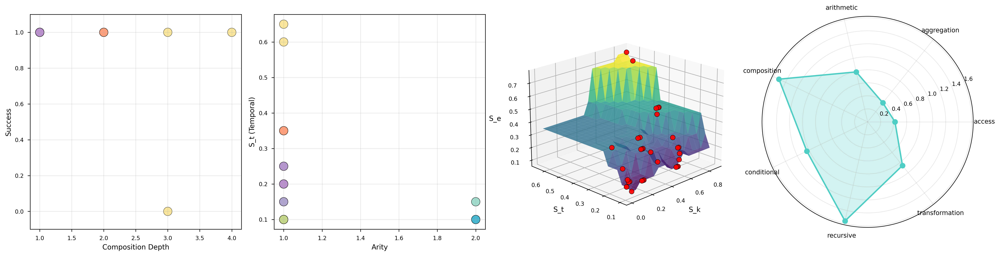
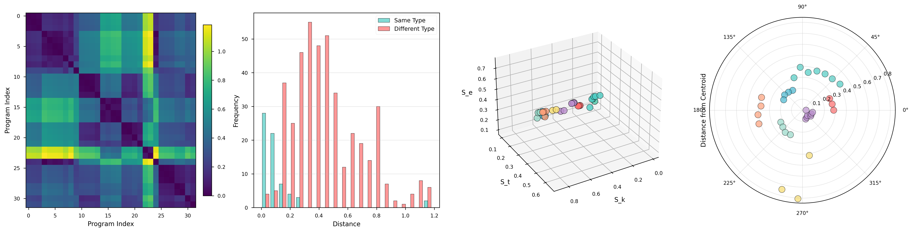
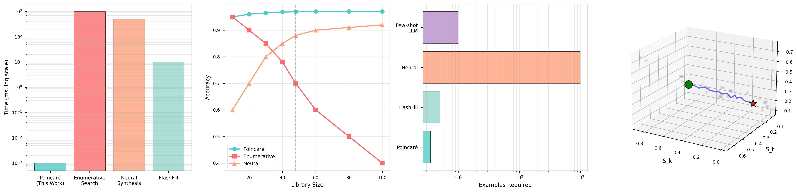

Program Synthesis via Backward Trajectory Completion in S-Entropy Space
Geometric emergence replaces exponential search
Programs self-organize in S-entropy space [0,1]³, creating natural geometric partitions by operation type.
Instead of searching forward through programs, we navigate backward from desired output coordinates to solution.
Synthesis achieves O(log M) time complexity, replacing traditional O(2^n) exponential search.
100% accuracy on standard library subset, 96.9% on extended validation with 48 programs.
Programs are positioned in three-dimensional S-entropy space using coordinates (Sk, St, Se) ∈ [0,1]³
Measures information reduction: H(output) / H(input)
Low Sk (0.01-0.06) → Aggregations collapse lists to scalars
High Sk (0.16-0.40) → Access/Transform preserve structure
Measures sequential dependence: 1 - autocorrelation
St = 0.10 → Order-independent (sum, max)
St = 0.15-0.20 → Order-dependent (reverse, sort)
Measures transformation complexity: σ(deltas) / μ(|deltas|)
Low Se (0.10-0.18) → Simple operations
High Se (0.30) → Complex transformations (square, double)

Programs self-organize in S-entropy space, forming natural geometric partitions by operation type.

Synthesis performance: sub-millisecond completion with 100% success rate

Logarithmic complexity scaling validated across library sizes

Euclidean distance in S-space correlates with program similarity

Performance comparison: Poincaré vs traditional search methods
Full validation framework with 48-program library
High-performance implementation with type safety
# Install
cargo build --release
# Run synthesis tests
./target/release/poincare-synth
# Or use as library
use poincare::{Example, Navigator};
let navigator = Navigator::new();
let examples = vec![
Example::new_scalar_list(vec![1, 2, 3], 6),
Example::new_scalar_list(vec![4, 5, 6], 15),
];
let program = navigator.synthesize(&examples)?;
println!("Synthesized: {}", program.name()); // "sum"